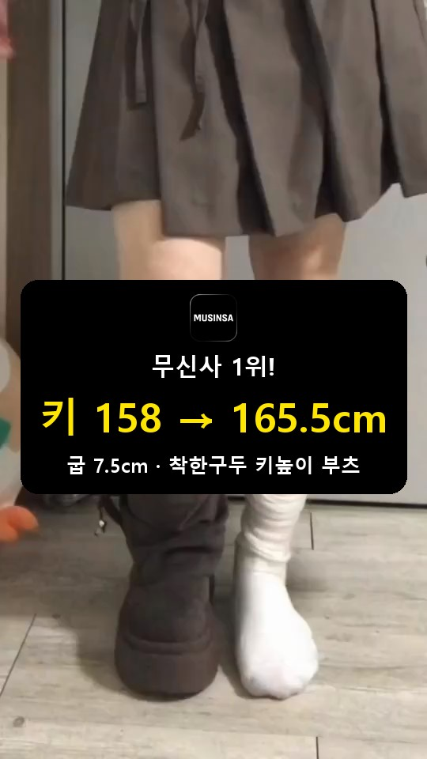

착한구두 키높이 부츠 촬영 가이드
아래 5장면으로, 23초 안팎이면 돼요.
제품 고르기하나만 골라 주세요
 카민스롱부츠 · 키높이 +7.5cm
카민스롱부츠 · 키높이 +7.5cm 놀킨바이커 미들부츠 · 키높이 +7.5cm
놀킨바이커 미들부츠 · 키높이 +7.5cm한쪽은 부츠, 한쪽은 양말
폰을 바닥에 세워 무릎 높이에 두고, 허리 아래만 나오게.
한쪽만 부츠를 신고 2초간 서 있어 주세요. 얼굴이 나오면 화면이 작아져서 차이가 안 보여요.



키 자리에는 ‘평소 키 → 평소 키 + 7.5’를 적어 주세요. 예: 158 → 165.5cm. 이 장면이 썸네일이 돼요.
글꼴·글자 색·크기는 자유예요. 내용과 위치(화면 가운데, 0초부터)만 맞춰 주세요.
무신사·지그재그 중 담당자가 알려드린 하나만 넣어 주세요. 지그재그면 로고와 ‘지그재그 1위’로 바꾸면 돼요.
원본 참고: 참고영상 2
로고 원본

앞에서, 옆에서 보여 주세요


앞에서 1초두 발 다 신고 정면에서 허리 아래만. 신은 뒤 비율이 보이면 돼요.
옆에서 1초다시 한쪽 부츠·한쪽 양말로 나란히 서서, 폰을 무릎 높이에 낮게 두고 옆에서. 발뒤꿈치가 올라간 높이가 바로 보여요. 숫자는 첫 장면에 있으니 여기엔 안 넣어도 돼요.


안쪽 굽, 겉모습을 가까이

단면 2초보내드린 단면 샘플을 한 발에 신거나 바닥에 세워 주세요. 폰을 옆에 낮게 두고, 잘린 면이 화면 가운데 크게 오면 돼요.
디테일 3초이어서 본품을 손에 들고 질감 → 굽 → 버클이나 주름을 1초씩 보여 주세요.


본품은 자르거나 안창을 빼지 마세요.
단면 샘플이 촬영 날까지 안 오면 이 장면은 빼고, 부츠 신은 컷 위에 ‘안에 굽이 숨어 있어요’ 자막으로만 대신해 주세요.
한 벌로, 무릎 아래 착화 컷 3개
옷은 한 벌이면 돼요. 부츠가 잘 보이는 옷(치마·짧은 바지·바지를 부츠 안에 넣은 차림)으로, 무릎 아래만 나오게 부츠 신은 모습을 3초씩 찍어 주세요.
앞에서 3초정면, 부츠 끝까지 나오게.
옆에서 3초굽과 밑창이 보이게.
거울로 3초전신 거울에 비친 허리 아래, 부츠가 가운데.
가방은 내려놓고 부츠가 가려지지 않게 해 주세요.
댓글 안내로 끝내 주세요
부츠를 신고 서 있는 모습을 3초 찍어 주세요.
얼굴이 나와도 돼요.
링크 보내드릴게요
○○는 담당자에게 받은 댓글 키워드로 바꿔 주세요. 글꼴·색은 자유예요.
이것만 빼 주세요


첫 장면에 얼굴까지 나오게 찍기 — 허리 아래만 나와야 차이가 잘 보여요.
멀리서 전신으로 찍기 — 폰을 무릎 높이에 가까이 두세요. 멀면 굽 높이 차이가 안 보여요.
언박싱 장면 넣기 — 상자 열기·포장 뜯기는 빼 주세요. 첫 장면부터 부츠를 신은 모습으로 시작해요.
가방 들고 찍기 — 가방이 부츠를 가려요. 빈손으로, 다른 신발도 화면 밖에 둬 주세요.
다른 신발 브랜드 이름·로고·상자, 유명인 이름, 저작권 음원은 넣지 않아요. 음악은 별도 안내가 없다면 안 넣어도 돼요.
촬영 전 준비
준비물 · 촬영 전 연락
- 제품 하나를 고르고 제품명·색상·사이즈를 보내 주세요. 고르신 제품의 단면 샘플도 함께 보내드려요.
- 폰 받침대나 삼각대, 양말, 부츠가 잘 보이는 코디 한 벌을 준비해 주세요.
- 어떻게 찍을지 글 몇 줄이나 말로 먼저 보내 주세요. 본인 기획안 양식도 괜찮아요. 확인 답변을 받은 뒤 촬영해 주세요.
- 초안 전달 날짜·게시 날짜·댓글 키워드도 확인해 주세요.
연락은 이 가이드를 받은 메일이나 대화방으로 주세요.